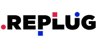

When you’re trying to build your digital product as a new founder it can be difficult to figure out how to approach building the project. You’ve figured out the technology to use but now you need to choose from the top UI/UX design agencies in Germany to curate your user experience. Well look no further because I have for you a comprehensive top 10 list to help you in your product building journey.
What to Expect When Working With a German UI UX Agency
When you’re about to work with a German UI UX company, you can expect a structured and detail-oriented approach that blends creativity with functionality. Their focus on usability and precise execution ensures your digital product delivers a good user experience.
1. Precision-Driven Research
Usually, German-based agencies go deep into user research, workflows, and behaviour patterns. So, you can expect a structured kickoff with clarity on goals, audiences, and product outcomes.
2. Clean & User-First Design
Germany’s design culture focuses on simplicity, clarity, and practical usage. By partnering with a reliable one, you’ll get interfaces that look modern, yet focused on reliability rather than visual noise.
3. Strong Process Discipline
German UI UX teams are known for organized workflows, consistent updates, and zero confusion. With their assistance, you’ll always know what’s happening and why the decisions are being made.
4. High Quality Prototyping
You can expect advanced prototypes, continuous feedback loops, and real user validation. Teams will test early and make sure each and every interaction feels natural.
5. Reliable Timelines & Long-Term Support
Every German agency values punctual delivery and steady support. Once the product goes live, they help you with refinements, UX audits, and ongoing optimization.
Top 10 UI/UX Design agencies in Germany
As a business owner, finding the right UI/UX Design partner for your product is crucial. However, there are plenty of service providers in Germany to choose from and you have to choose a firm that aligns with your vision. You need a great team of UI/UX experts who have good track experience designing and building products. Additionally, they have to be very experienced in the sector that you’re trying to penetrate into.
To help you out I’ve prepared a very comprehensive list of the best UI/UX design agencies in Germany. Some of the agencies I’ve mentioned provide services globally and work with clients from all over the world. However, some of them may be experts in some areas and not in others. So it's important for you to understand what their strengths are so that you can choose the agency that provides you with the most value for your project.
Now that we have that settled let's jump right into our top 10 list of UI/UX design agencies in Germany. All of these agencies are great firms to work with and you can choose the right agency for your particular project.
1. Sparkout Tech Solutions
Sparkout Tech Solutions Inc an established digital product design and development agency and one of the major UI/UX design agencies in Germany.
If you’re looking for a worldwide service provider that focuses on UI/UX design for businesses then Sparkout Tech will be your apt partner. Apart from providing you with high quality UI/UX design services Sparkout Tech is also a full service software development company. Additionally, Sparkout Tech has deep expertise in emerging technologies such as blockchain, AI and ML, IoT, and much more.
One of Sparkout Tech’s major advantages is that you can get everything you need for digital product development under one roof which includes great UI/UX designs. What’s more is that as one of the top UI/UX design agencies in Germany Sparkout is structured in a way that its design team operates as a separate Design Studio. If you’re looking for a leading agency in Germany to be your design and development partner then Sparkout could be the right global provider for you.
Pros:
- Highly focused on UI/UX design services with a specialized team for services.
- They have experience with emerging deep technologies such as blockchain, AI and ML and IoT.
- They are a global services company that works with both small and large businesses.
- Focuses on building tailored solutions for you which includes both intuitive designs as well as software development service as one of the top UI/UX design agencies in Germany.
Cons:
- The comprehensive nature of services might carry a premium cost if your project is complex.
- Because they have a detailed approach to product design the timelines for your projects might be on the longer side depending on the scale of your product.
Website - www.sparkouttech.com
2. Mobiteam GmbH
Mobiteam is also a full scale services agency that is based in Berlin. Since they specialize majorly in ecommerce solutions, if you want an agency that can optimize your online store’s design for conversions Mobiteam might be the right fit for you.
They are among the leading UI/UX design agencies in Germany and provide web and mobile application design services other than ecommerce solutions. Additionally, they are well known for designing highly engaging digital products with high concentration on making designs user centric. They may be the right fit for you if you’re looking for an agency that specializes in retail, healthcare or education.
Pros:
- They focus highly on designs that are user centric.
- They have good expertise with providing ecommerce solutions.
- Comprehensive approach to user experience design.
Cons:
- Since they provide comprehensive design and development services their costs can be on the higher side.
- Although they have a full scale service offering as one of the top UI/UX design agencies in Germany their keen focus on ecommerce design might be a barrier if you’re in other sectors.
- They are based mainly in Berlin which might be a barrier for you if you’re located outside of Berlin.
Website - www.mobiteam.de
3. COBE
COBE is another full service agency if you’re looking for someone that specializes in user experience design. Their major speciality is that they can make designs for you that are very human centric.
One of the major plus points of COBE is they focus on creating user experiences that are creative and user friendly while at the same time focusing on user research. Their designs emphasize greatly on creating a clean user journey which also ensures that your apps are functional and aesthetically pleasing. Being among the top UI/UX design agencies in Germany they help a wide array of industries like technology, healthcare and finance. COBE also focuses a lot on co-creation which means that they work closely with you to understand your business needs and tailor designs to meet your goals and your users’ expectations.
Pros:
- They have a keen focus on creating human centered designs.
- Apart from designing for products they also provide services in digital strategy.
- Their designs include very in-depth user research and testing.
Cons:
- Since their design process is very detailed the timelines can be on the longer side.
- As one of the leading UI/UX design agencies in Germany they provide deep user research and testing while designing which may be expensive depending on your project.
- Their major focus is on UI/UX design which might be a barrier for you if you’re looking for full scale development services also.
Website - www.cobeisfresh.com
4. REPLUG

REPLUG is a different kind of agency in the bunch as their major focus is on mobile app marketing and growth with a very key focus on optimizing the user experience for your mobile apps.
They are different because their primary focus is not on designing from scratch. Their services as one of the leading UI/UX design agencies in Germany are all about helping you enhance your existing mobile apps to drive more growth and engagement. They do this through effective user experience design. Another great thing about REPLUG is that they work with a diverse range of industries like gaming, ecommerce and fintech.
Pros:
- They follow a data driven approach to UI/UX design.
- They specialize in revamping your existing mobile apps to achieve growth and user retention through effective UX design.
- They also focus on mobile app marketing and user acquisition.
Cons:
- If you’re looking for full scale development services along with UI/UX design they may not be the right fit for you.
- While they are one of the leading UI/UX design agencies in Germany they focus primarily on mobile apps and not web apps.
- Since they provide a specialized and niche service their costs may be on the higher side if you’re a smaller business.
Website - www.rplg.io
5. Avenga

Avenga is another well known agency and they provide you with digital transformation and IT services. One great thing about them is that you can get multiple services from them like UI/UX design, software development and digital strategy. Their headquarters is in Cologne and they provide services for their clients around the world.
Additionally, they have keen experience in a wide range of industries and use cases like healthcare, insurance, finance and automotive. Another great thing about Avenga is that they are one of the top UI/UX design agencies in Germany and take a scientific approach to the design they provide you. This includes applying approaches like design thinking and Agile to build your products. You can get highly user centric designs tailored to your business and customers.
Pros:
- They have a global presence and their teams are experienced in multiple use cases.
- They can provide you with comprehensive services if you need both design and software development.
- Since they provide their services using the Agile methodology you can work with them flexibly even if you have iterations.
Cons:
- If you’re a smaller business the large scale of their services may not be suitable.
- They follow complex and in depth processes which might increase project timelines.
- As one of the major UI/UX design agencies in Germany their presence is global and services are wide so their costs may be on the higher side.
Website - www.avenga.com
6. Innowise Group

Innowise is another leading full service agency and they specialize in UI/UX design and software development. Apart from their presence in Germany they are also present in other major locations around the world.
A major benefit of Innowise is that they combine visually appealing design and digital development to give you great digital products. Their design philosophy is to create intuitive and engaging user interfaces across all application platforms like mobile, web and desktop. Additionally, as one of the top UI/UX design agencies in Germany they service a wide range of industries like healthcare, retail and finance. Their work process is very collaborative and will work with you closely to deliver highly customized solutions that combine great design with functionality.
Pros:
- They are a full service agency which includes design and development.
- They have a very strong focus on creating engaging interfaces that are user friendly.
- They have their presence around the world and have great talent working for them.
Cons:
- They are a large scale organization and you have to decide if your business size suits their target audience.
- As one of the leading UI/UX design agencies in Germany they offer a wide range of services and their cost may be on the higher side.
- If you have a complex project the delivery timelines may be longer.
Website - www.innowise.com
7. Snapp X

Snapp X is a well known design agency from Germany and is based in Berlin. They are highly focused on creating designs that are very sleek and appealing while being very functional in terms of the user experience.
Their major service offerings are centered around websites and applications for startups and established businesses. Additionally, Snapp X is known for creating designs that not only look amazing but also provides your users with a seamless user experience. As one of the leading UI/UX design agencies in Germany Snapp X’s services are comprehensive and start from the early product discovery stage to detailed wireframes and prototyping.
Pros:
- They focus highly on design principles that are user centered.
- Their processes are optimized to be lean and agile and geared to provide quick turnaround times.
- They have deep expertise in creating designs that are both visually appealing and functional.
Cons:
- Their focus is on UI/UX design services and may not provide any development services.
- They might not work on large scale and complex projects.
- Although they are one of the major UI/UX design agencies in Germany If you have multiple projects or if your project has multiple intricate elements their smaller team size might be a barrier.
Website - www.snappx.io
8. Digital-masters

Digital-masters is a digital agency from Hamburg that specializes in UI/UX design, branding and digital strategy. Their major advantage is that their focus is on user friendly and aesthetic design that can help your business build a strong digital presence.
Additionally, their user centric ensures that your app’s user experience is tailored to your customers and provides a seamless flow across web and mobile devices. What’s more is that you get visually appealing interfaces that maintain your brand consistency. As one of the top UI/UX design agencies in Germany they also focus greatly on user research which means that you can optimize our user journey for engagement and consistency.
Pros:
- They are very focused on UI/UX designs that maintain brand consistency.
- They provide highly custom made solutions for diverse industries.
- They create designs that emphasize on user engagement and optimization for conversions.
Cons:
- Since they are design focused their development services may be limited.
- The comprehensive nature of their services might carry a higher cost if you have a large and complex project.
- Since their services are very focused on design as one of the leading UI/UX design agencies in Germany their delivery timelines may be extended.
Website - www.digital-masters.de
9. Nachmorgen

Nachmorgen is one of the major creative agencies that specializes in UI/UX design services. They are based out of Berlin and apart from design they also focus on helping you with digital strategy and branding.
Nachmorgen is known for taking an approach that is innovative and forward thinking. Through this they blend creativity with user centric design to create products that are both visually appealing and highly functional. They specialize in helping you enhance your brand presence and user experience through user experiences that are data driven. As one of the leading UI/UX design agencies in Germany they work with a variety of platforms such as mobile, web and desktop devices.
Pros:
- They have a keen focus on providing design solutions that are innovative and creative.
- They could be a great option for you if you need branding and digital strategy.
Cons:
- They are highly focused on design and branding which might mean that they don’t provide development services.
- Since their services are high end and premium their costs may be on the higher side.
- They may have a smaller team size which might be limiting for large scale projects.
Website - www.nachmorgen.de
10. Uideation

Last but definitely not the least we have Uideation which is one of the UI/UX design agencies in Germany and they provide high end UI/UX design and digital product services.
They are an agency well known for making products that blend creativity with functionality while also being user friendly. Their services are very detailed and they can help you with end to end product design services which includes product design, user research and prototyping. Additionally, they work with a wide array of industries which includes fintech and healthcare. They are well known for delivering solutions that are both practical and innovative.
Pros:
- Uideation follows a highly user centric approach when designing products which is also holistic as one of the top UI/UX design agencies in Germany.
- They have deep expertise in various industries which includes fintech and healthcare.
- They also provide services in the Agile method which will be flexible for you to work with.
Cons:
- Since their major focus is on UI/UX design their scope of work outside that area may be limited.
- They may have a smaller team size which might be limiting if you have a very large scale project.
That’s a wind up for our top 10 list of the best UI/UX design agencies in Germany
If you’ve made it this far then you have all the information you need before choosing a UI/UX agency from Germany for your next project. All the agencies that I’ve mentioned here are top notch and provide high quality services. However, you have to decide on which provider you can go with based on your requirements and the vision you have for your project. If you think our top 10 list for UI/UX design agencies in Germany helped you out then consider sharing with another founder or business owner that might benefit from it.